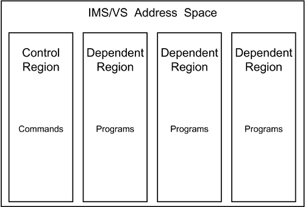
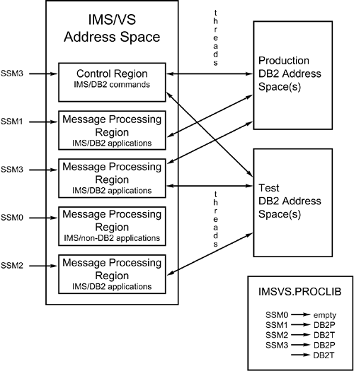
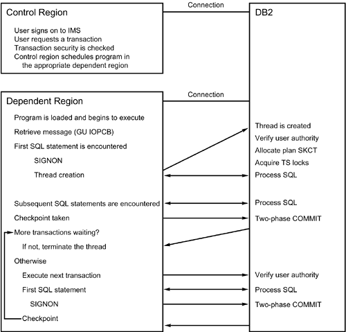
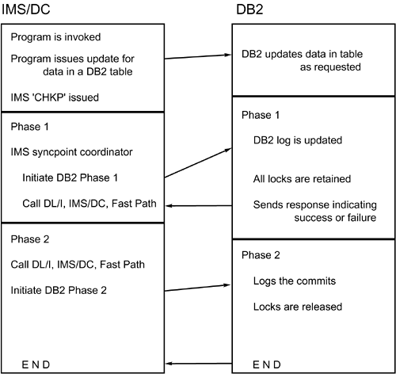

|
|
< Day Day Up > |
|
IMS (Information Management System)IMS is IBM's pre-relational database management system offering. It is based on the structuring of related data items in inverted trees or hierarchies. Although usually perceived as only a DBMS, IMS is a combination of two components:
You can use these IMS components separately or together. Online access to IMS databases is achieved through IMS/TM or CICS. Access to IMS databases is provided also in a batch environment. When an IMS database is accessed through IMS/TM, it is said to be online; when it is accessed in batch, it is said to be offline. IMS/TM provides an online environment in which you can run application programs that communicate with a terminal, much like CICS. Like CICS, IMS/TM can be used by programs that access not only IMS databases but also DB2 tables. IMS and CICS are alike in many respects, but they also have significant differences, outlined in the following paragraphs. For example, IMS uses a facility called MFS (Message Format Services) to format messages to terminals and printers; CICS uses BMS (Basic Mapping Support). IMS/TM controls its environment not through tables, but through a series of macros known as a SYSGEN. The SYSGEN defines the terminals, programs, transactions, and the general online environment for IMS/TM. Another difference is that all IMS programs require a program specification block (PSB), which defines the access to IMS/DB databases and IMS/TM resources. Along with IMS DBDs that define the structure of the IMS databases to be accessed, the PSBs are defined to control a program's scope of operation. An additional control block, the ACB (application control block), is used in the online world (and optionally in the batch environment) to combine the PSBs and DBDs into a single control block defining the control structure and scope of all IMS programs. All IMS/TM activity is processed through a region. There are two types of regions. One control region manages IMS activity and processes commands. Application programs execute from dependent regions. As many as 255 dependent regions can exist for each IMS/TM subsystem. See Figure 18.26 for clarification. Figure 18.26. IMS/TM regions. Types of IMS ProgramsIMS programs are categorized, based on the environment in which they run and the types of databases they can access. The four types of IMS programs are batch programs, batch message processors, message processing programs, and fast path programs. An IMS batch program is invoked by JCL and runs as an MVS batch job. IMS batch programs can access only offline IMS databases, unless IMS Data Base Recovery Control (DBRC) is used. When DB2 tables are accessed by IMS batch programs, they are commonly referred to as DL/I batch. DL/I (Data Language/I) is the language used to access data in IMS databases, just as SQL is the language used to access data in DB2 tables. Batch DL/I programs run independently of the IMS/TM environment. The second type of IMS program is called a batch message processor, or BMP. BMPs are hybrid programs combining elements of both batch and online programs. A BMP runs under the jurisdiction of IMS/TM but is invoked by JES and operates as a batch program. All databases accessed by a BMP must be online to IMS/TM. The following are the two types of BMPs:
True online IMS programs are called message processing programs, or MPPs. They are initiated by a transaction code, access online databases, and communicate with terminals through the message queue. The final type of IMS program is a fast path program. Fast path programs are very high performance MPPs that access a special type of IMS database known as a fast path database. The IMS Attach FacilityAs with the other environments, a specialized attachment facility is provided with DB2 to enable IMS to access DB2 resources. The IMS Attach Facility, due to the nature of IMS, provides more flexibility in connecting to DB2 than the Attach Facilities for TSO or CICS. In Figure 18.27, you can see that the following connections are supported using the IMS Attach Facility:
Figure 18.27. The IMS Attach Facility. DB2 is connected to IMS by a subsystem member (SSM). The SSM defines the parameters of the IMS Attach Facility for both online and batch connections. The following list outlines the SSM parameters: Online Attach ConsiderationsEnabling the IMS Attach Facility for the online environment is the responsibility of a system programmer. IMS-to-DB2 connections are defined by changing the JCL used to invoke the IMS subsystem. The SSM is assigned to the JCL by a parameter on the EXEC card. The IMS SYSGEN procedure is unaffected by the addition of an IMS-to-DB2 connection. To establish the connection between IMS/TM and DB2, you must perform the following steps:
The SSM defined to the control region is the default for all dependent regions. If you do not want this default, code a separate SSM for each dependent region that has different IMS-to-DB2 connection needs, and follow the preceding steps for each of the dependent regions. If more than one DB2 subsystem will be connected to a single region (control or dependent), the SSM for that region must contain a line for each of the DB2 subsystems. Then a second language interface module must be generated. The standard language interface module is DFSLI000; it uses SYS1 as its language interface token (LIT) in the SSM. You can create a second language interface module, DFSLI002, for example, by using SYS2 for its LIT. You can generate the second language interface module using the DFSLI macro provided with IMS/VS. Consider this example: DFSLI002 DFSLI TYPE=DB2,LIT=SYS2 A program executing in any region connected to more than one DB2 subsystem accesses the appropriate DB2 subsystem based on which language interface module the program was link-edited with at program preparation time. In this example, the module would be either DFSLI000 or DFSLI002. CONNECTION, PLAN, and PROGRAM are batch parameters and, as such, are invalid when defining the SSM for IMS/TM. Sample online SSM definitions follow. The first is a simple SSM connecting the DB2P subsystem to IMS/TM: DB2P,SYS1,DSNMIN10,,R,- You use the second to connect two DB2 subsystems, DB2A and DB2B, to a single IMS/TM: DB2A,SYS1,DSNMIN10,,R,- DB2B,SYS2,DSNMIN10,,R,+ To access DB2A, INCLUDE the DFSLI000 module (because it is associated with LIT SYS1) in the link-edit step for your programs. DFSLI002, on the other hand, is associated with LIT SYS2, so it is link-edited into programs that must access DB2B resources. An online IMS/TM program (BMP, MPP, or fast path) must follow standard DB2 program preparation procedures (precompile, compile, link edit, and BIND). However, a few special considerations apply:
The Resource Translation TableYou can define a resource translation table (RTT) using the DSNMAPN assembler macro. An RTT is necessary only when the plan name is not the same as the program name. Consider this example: DSNMAPN APN=PROGRAMX,PLAN=PLANX, . . . This statement assigns the plan name, PLANX, to the program PROGRAMX. This macro must be linked to the DB2 load library with the name specified in the RTT parameter of the SSM being used. IMS/TM Thread UseTwo types of threads are used by IMS/TM: command threads and transaction threads. The type of thread is contingent on the type of region it has been created for. Each region can have only one thread at any given time. Threads emanating from IMS/TM are not created until they are needed, even though the IMS-to-DB2 connection has been established. The following process is for a command thread emanating from the control region:
Additional processing is required for transaction threads. Transaction threads are created from a dependent region that was scheduled by the control region. The procedure for transaction thread creation and its use is shown in Figure 18.28. Figure 18.28. IMS/DB2 transaction threads.Two-Phase CommitRecall that CICS programs commit changes by means of CICS commands and not the normal DB2 COMMIT statement. Likewise, changes made in IMS/TM programs are committed and rolled back by means of IMS commands. You code the IMS checkpoint command, which implements a COMMIT, as follows:
CALL 'CBLTDLI' USING NUM-OPS,
'CHKP',
IO-PCB,
CHKP-LENGTH,
CHKP-AREA.
You code the IMS rollback command as follows:
CALL 'CBLTDLI' USING NUM-OPS,
'ROLB',
IO-PCB,
CHKP-LENGTH,
CHKP-AREA.
The SQL verbs COMMIT and ROLLBACK are not valid in IMS/TM programs. An implicit commit is performed when a GET UNIQUE is issued to the message queue. When a checkpoint is requested in an IMS/TM program, a two-phase commit is performed much like the two-phase commit discussed in the previous section on CICS. The commit is done in two phases to synchronize the updates made to IMS databases with those made to DB2 tables. The two-phase commit process for IMS/TM programs is outlined in Figure 18.29. A component of IMS/TM called the syncpoint coordinator handles the coordination of commits. Figure 18.29. The IMS/TM two-phase commit process. Phase 1 of the commit process consists of IMS/TM informing each participant that a syncpoint has been reached and that each participant should prepare to commit. The participants can include DB2, DL/I, IMS/TM, and IMS Fast Path. Each participant performs the needed tasks to ensure that a commit is possible for that environment. DB2 updates its log, retains all locks, and informs the IMS syncpoint coordinator that phase 1 has been completed successfully. If all other participants signal that the commit can proceed, phase 2 is initiated, whereby each participant is responsible for completing the commit. If any participant signals that phase 1 cannot be completed successfully, the entire unit of work is aborted and the updates are backed out. In phase 2, DB2 logs the commit and releases all locks. The two-phase commit process virtually ensures the integrity of DB2 data modified by IMS/TM. If changes cannot be committed in either DB2 or IMS for any reason, they are rolled back in both. In a connection failure of a system crash, however, the commit status of some transactions may be in doubt. They are referred to as in-doubt threads. When DB2 and IMS/TM are started after a system failure, and the IMS-to-DB2 connection is reestablished, most in-doubt threads are resolved automatically. If any in-doubt threads remain, you can use the RECOVER INDOUBT command to commit or roll back the changes pending for these threads. RestartThe restart capabilities of IMS/TM can be used by online programs. You code the IMS restart command, XRST, as follows:
CALL 'CBLTDLI' USING 'XRST',
IO-PCB,
IO-LENGTH,
IO-AREA,
CHKP-LENGTH,
CHKP-AREA.
XRST reads the last checkpoint from the IMS log and passes the data stored in the checkpoint area to the program issuing the command. The program can use that information to reposition DB2 cursors and reestablish IMS database positioning. It is imperative, though, that each checkpoint call passes all requisite information for repositioning each time it is issued. For DB2 cursors, this information should include the name of the cursor, the tables being accessed, and the last key or keys retrieved. For IMS databases, this information includes the name of the database, the segment being accessed, and the complete concatenated key. This information should be saved for every DB2 cursor and IMS database PCB that must be repositioned. IMS/DB2 DeadlocksDB2 locks and IMS locks are managed independently. DB2 uses a lock manager called the IRLM. IMS can use the IRLM to control locks, but it can also use a technique known as program isolation. Even if both subsystems use an IRLM to control locks, IMS locks are issued independently from DB2 locks. As a result, a deadlock can occur. A complete description of deadlocks is included in Chapter 23, "Locking DB2 Data." An example of an IMS and DB2 deadlock is presented in the following processing sequence for two concurrently executing application programs:
Program 1 requests a lock for DB2 resources that Program 2 holds, and Program 2 requests a lock for IMS resources that Program 1 holds. This deadlock must be resolved before either program can perform subsequent processing. One of the two programs must be targeted as the victim of the deadlock; in other words, it either abends or is timed out. The deadlock situation is resolved differently depending on the program and the resource. When an MPP is the victim in a deadlock, it abends with a U777 abend. When a batch-oriented BMP is the victim in a deadlock, the abend received depends on the type of resource that could not be locked:
IMS SYSGEN GuidelinesThe following guidelines are useful when performing an IMS SYSGEN for DB2. Promote Thread Use with PROCLIMSpecify the PROCLIM parameter of the TRANSACT macro to be greater than 1 to encourage thread reuse for IMS transactions that access DB2 tables. When multiple transactions are processed during the same PSB schedule, DB2 can reuse the thread, thereby reducing overhead by avoiding thread creation. Use WFI and Fast Path Only for Critical TransactionsThreads are always reused by WFI (Wait For Input) transactions and Fast Path regions. The thread is not terminated unless the WFI or Fast Path region is stopped, so these regions tie up a thread indefinitely. For this reason, use WFI transactions and Fast Path regions for only high-volume, critical transactions. For low-volume transactions, use the PROCLIM parameter to control thread reuse. Define the Transaction Mode CarefullyYou can define a transaction to operate in one of two modes: MODE=SNGL or MODE=MULTI. MODE=SNGL transactions define a unit of work at the transaction level, whereas MODE=MULTI transactions string multiple transactions together into a unit of work. Single mode transactions cause a syncpoint when the transaction is completed. Multiple mode transactions do not reach a syncpoint until the program is terminated. As the programmer, you must know the mode of the transaction before coding to implement CHKP processing effectively and to reestablish cursor and database positioning properly. Use INQUIRY=YES for Read-Only TransactionsYou can define read-only transactions by coding INQUIRY=YES for the TRANSACT macro. Transactions defined to be read-only cannot update IMS databases. When the transaction accesses DB2, it cannot modify data in DB2 tables. An attempt to issue the following SQL statements in a read-only transaction results in a -817 SQLCODE:
DL/I Batch InterfaceThe DL/I batch interface enables batch IMS programs to access DB2 data. DL/I batch programs access DB2 data under the auspices of the IMS attach facility, which is defined by an SSM. When you're establishing an IMS-to-DB2 connection for a batch program, the JCL used to execute the batch program must contain the SSM parameters. It is assigned to the DDITV02 DD name, as shown in the following example: //DDITV02 DD * DB2T,SYS1,DSNMIN10,,R,-,APPL01,,PGM01 /* This SSM connects the PGM01 program to DB2T using a plan with the same name as the program. The program does not abend if DB2 is unavailable. Another SSM example follows: //DDITV02 DD * DSN,SYS1,DSNMIN10,,A,-,APPL02,PLANNAME,PGM02 /* This SSM uses plan PLANNAME to connect the PGM02 program to the DB2 subsystem named DSN. An abend is forced if DB2 is unavailable. If the DDITV02 DD name is missing or specified incorrectly, a connection is not made and the job abends. Additionally, you can specify an output data set containing status and processing information by using the DDOTV02 DD name. If you do not specify the DDOTV02 DD name, processing continues without sending the status and processing information. Sample JCL to run a DL/I batch program that accesses DB2 tables is shown in Listing 18.4. This JCL runs the BTCHPROG program using the BTCHPLAN plan. Notice that the JCL contains two steps. The first step runs the DL/I batch program, and the second step prints the contents of the DDOTV02 data set. Printing the DDOTV02 data set is a good idea because it can contain pertinent information for resolving any processing errors. Listing 18.4. JCL to Run a DL/I Batch DB2 Program//DB2JOBB JOB (BATCH),'DL/I BATCH',MSGCLASS=X,CLASS=X, // NOTIFY=USER,REGION=4096K //* //**************************************************************** //* //* JCL TO RUN AN IMS/DB2 PROGRAM IN BATCH //* //* PROGRAM NAME :: BTCHPROG //* PLAN NAME :: BTCHPLAN //* CONNECTION NAME :: DB2B0001 //* //**************************************************************** //* //JOBLIB DD DSN=SYS1.DB2V810.DSNLOAD,DISP=SHR //BATCHPRG EXEC DLIBATCH,DBRC=Y,LOGT=SYSDA,COND=EVEN, // MSGCLASS='X',CLASS='X' //G.STEPLIB DD // DD // DD Add a DD for each DB2, COBOL, and program // load library //G.IEFRDER DD DSN=IMSLOG,DISP=(NEW,CATLG,CATLG),. . . //G.STEPCAT DD DSN=IMSCAT,DISP=SHR //G.DDOTV02 DD DSN=&DDOTV02,DISP=(NEW,PASS,DELETE), // UNIT=SYSDA,DCB=(RECFM=VB,BLKSIZE=4096,LRECL=4092), // SPACE=(TRK,(1,1),RLSE) //G.DDITV02 DD * DB2P,SYS1,DSNMIN10,,A,-,DB2B0001,BTCHPLAN,BTCHPROG /* //* //*************************************************************** //* //* PRINT THE DDOTV02 DATASET IF THERE ARE PROBLEMS //* //**************************************************************** //* //PRINTOUT EXEC PGM=DFSERA10,COND=EVEN //STEPLIB DD DSN=IMS.RESLIB,DISP=SHR //SYSPRINT DD SYSOUT=X //SYSUT1 DD DSN=&DDOTV02,DISP=(OLD,DELETE) //SYSIN DD * CONTROL CNTL K=000,H=8000 OPTION PRINT /* // A DL/I batch program must follow standard DB2 program preparation procedures (precompile, compile, link-edit, and bind). However, a few special considerations apply:
IMS/TM Design GuidelinesThe following techniques should be applied when designing IMS transactions that access DB2 data. Avoid DDLAvoid issuing DDL in an IMS/TM program. DDL execution is time intensive and acquires locks on the DB2 Catalog and the DB2 Directory. Because IMS/TM programs should be quick, they should avoid DDL. Copy PCBs Before Each CheckpointApplication programs should save the PCBs for all IMS databases before invoking an IMS CHKP. After the CHKP, copy the saved PCB back to the original to reestablish positioning in the IMS databases. Otherwise, the IMS database positioning is lost, much like DB2 cursor positioning is lost when a COMMIT is performed. Be Aware of Cursor Closing PointsIMS closes all DB2 cursors in WFI and MODE=SINGL transactions when the program does a get unique (GU) to the message queue (IOPCB). Cursors also are closed when the program issues a CHKP call or when the program terminates. Use a Scratch Pad AreaUse the SPA (Scratch Pad Area) to store temporary work and to implement pseudoconversational programs. Use Fast Path for Sequential Number AssignmentConsider using IMS Fast Path database storage to assign sequential numbers. Accessing sequential numbers for assignment using Fast Path databases is more efficient than other conventional means (for example, reading a table containing the highest number). Use Testing ToolsUse testing tools such as the Batch Terminal Simulator (BTS). The requirements for using BTS follow:
Note that any valid DB2 subsystem ID can be substituted for DB2T. Do Not Share IRLMsThe DBRC facility of IMS uses an IRLM to control locking when multiple jobs access shared databases. Never share a single IRLM between DB2 and IMS because doing so results in inefficient locking for both IMS and DB2. Also, a shared IRLM is difficult to monitor and tune. Specify a single IRLM for each DB2 subsystem and an IRLM for the IMS subsystem. Consider IMS/ESA Quick RescheduleFor very active, critical transactions, use the quick reschedule feature of IMS/ESA. Quick reschedule creates a "hot region" for the execution of MPPs. When quick reschedule is implemented, the MPP region does not terminate when the PROCLIM count is reached if the message queue holds a qualifying transaction waiting to execute. |
|
|
< Day Day Up > |
|